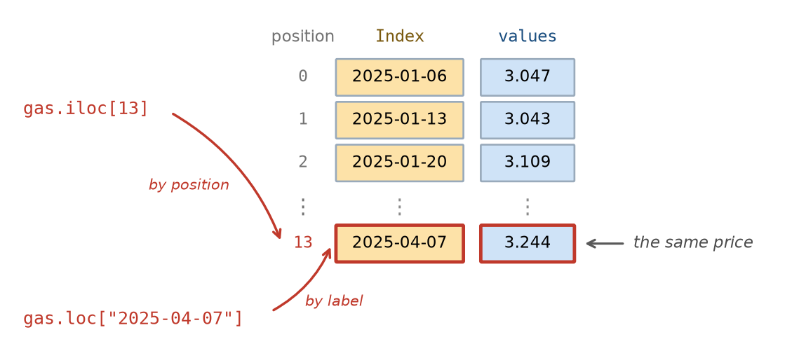
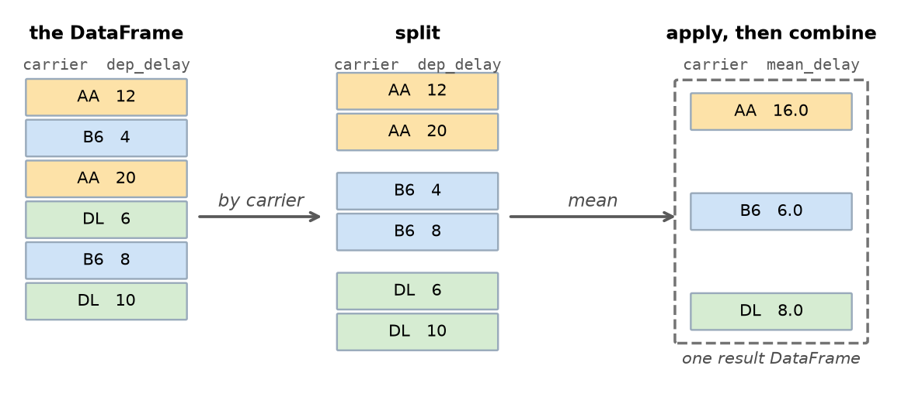
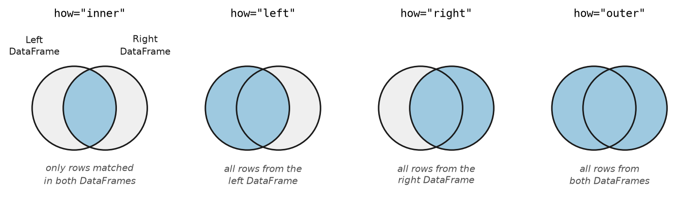

import pandas as pd5 Data tables
Suppose you are booking a flight out of New York and would rather not spend the evening sitting on a runway. Which airline has the longest delays on average? Does it matter whether you fly out of Newark, JFK or LaGuardia, or whether you take a morning flight instead of an evening one? The U.S. government publishes data on every domestic flight, the airline that operated it, the airport it left from, the time it was scheduled to leave, and the time when it actually left. Using this data, it is possible to answer these questions.
When answering these questions it is important to keep information about the same flight together; i.e., we need each flight’s carrier, the time the flight was scheduled to depart, its delay, etc. attached to each other, for all flights. This is difficult to do using the lists and arrays discussed in the last two chapters.
A table makes the connection explicit. Each row corresponds to one item in the world, such as a single flight (or a movie or a particular week in the year), and each column is one measurement made on the item. This allows us to keep information about an item together when the table is sorted or a subset of the rows are selected. Columns can hold different types of information, such as text in one column and numbers in the next. In fact, data tables are one of the most frequently used formats when analyzing data, from spreadsheets to survey results to the tables inside databases.
In Python, the most popular package for representing and manipulating table data is pandas. The pandas package is built around two key data structures: a Series, which is a single sequence of values with labels attached, and a DataFrame which is a table of data. By the end of this chapter we will be able to load a file into a DataFrame, select the rows and columns we want, add new columns computed from old ones, decide what to do about values that are missing, summarize a DataFrame one group at a time, and combine two DataFrames into one. These operations will allow us to answer the questions about flight delays we posed above.
Throughout this book the pandas package is imported under its conventional short name pd:
5.1 From arrays to Series
As mentioned above, the pandas package contains two key data structures: Series and DataFrames. We will start by discussing pandas Series, and once we have understood that data structure we will go on to discuss DataFrames.
At the end of Chapter 4 we were storing data on a year of gas prices in two separate NumPy arrays: gas_prices held 52 prices as numbers and gas_dates held the 52 dates those numbers belonged to. The cell below loads them again, exactly as before.
# Try to download the data live from FRED; if that fails (for example, when there
# is no internet connection), fall back to a saved snapshot of the same year.
try:
from pandas_datareader.fred import FredReader
gas_data_all = FredReader("GASREGW", start="2024-06-01", end="2026-01-15").read().reset_index()
gas_year = gas_data_all[(gas_data_all["DATE"] >= "2025-01-01") & (gas_data_all["DATE"] < "2026-01-01")]
except Exception:
gas_year = pd.read_csv("data/gas_prices_GASREGW_2025.csv", parse_dates=["DATE"])
gas_prices = gas_year["GASREGW"].values
gas_dates = gas_year["DATE"].values
gas_prices[0:3]array([3.047, 3.043, 3.109])Because this data was held in separate arrays, nothing in Python knew they belonged together. The connection lived entirely in our own knowledge of the data, and we needed to keep these two arrays in exactly the same order. If we sort the prices to find the cheapest week, the dates no longer line up with them. If we drop a week from one array, every position in the other array becomes wrong. It was also difficult to answer the simple question of what the price of gas was during a particular week.
A Series solves this by carrying the labels (called an Index) along with the values. The values are just a regular ndarray that we saw in Chapter 4 and the Index allows us to easily access these array values through a set of labels.

We can create pandas Series by handing pandas the values and the Index labels we want attached to them:
# The values come first, then the labels to attach to them
gas = pd.Series(gas_prices, index=gas_dates)
gas.head()2025-01-06 3.047
2025-01-13 3.043
2025-01-20 3.109
2025-01-27 3.103
2025-02-03 3.082
dtype: float64When we call the .head() method, the left-hand column is the Index, which holds the labels, and the right-hand column holds the values. They are now one object, so anything that happens to the values happens to the labels too.
We can extract both the Index values and the data values separately when we want them. Using the .values property extracts the same NumPy array we started with, and using the .index property returns the Index values:
[gas.values[0:3], gas.index[0:3]][array([3.047, 3.043, 3.109]),
DatetimeIndex(['2025-01-06', '2025-01-13', '2025-01-20'], dtype='datetime64[us]', freq=None)]5.1.1 Looking up values by label and by position
We can extract values from a Series object by the position in the Series and by the Index label. To extract data by position, we use the .iloc accessor, which takes a position, counting from zero the way a list or an array does, and returns the value at that position.
# The first price of the year, by position
gas.iloc[0]np.float64(3.047)To extract a value based on an Index label, we use the .loc accessor, which takes a label (which here means a date), and returns the value at that given label.
# The price in the week of April 7th, by label
gas.loc["2025-04-07"]np.float64(3.243)The difference between the .iloc and the .loc accessors is the most common source of confusion for people new to pandas, so it is worth pausing here. The rule for telling them apart is short:
.ilocis about where a value sits; i.e., the position in the array.locis about what it is called; i.e., the Index name
In the gas Series above, the label "2025-04-07" and the position 13 refer to the same price, as the figure below shows. Only the label stays correct if the data is sorted or values are removed from the Series, because the label travels with its value while the position does not.

5.1.2 All NumPy array operations work on a Series
A Series is built on top of a NumPy array, so the vectorized arithmetic and Boolean masking from Chapter 4 carry over unchanged. Arithmetic applies to every value at once and the Index labels remain unchanged:
# Convert every price from dollars to cents
(gas * 100).head(3)2025-01-06 304.7
2025-01-13 304.3
2025-01-20 310.9
dtype: float64A comparison produces a Series of True and False values, and using it to index the Series keeps the rows where it is True:
expensive = gas[gas > 3.15]
expensive2025-03-31 3.162
2025-04-07 3.243
2025-04-14 3.168
2025-05-19 3.173
2025-05-26 3.160
2025-06-23 3.213
2025-06-30 3.164
2025-09-01 3.177
2025-09-08 3.192
2025-09-15 3.168
2025-09-22 3.173
dtype: float64The difference from a plain NumPy array is visible in the output of the cell above. The output does not just show us the expensive gas prices, it also shows us which weeks were the expensive ones, because each value brought its Index date along with it.
In Chapter 4 we computed summaries by calling NumPy functions on an array, in the form np.max(gas_prices). A Series also provides these same summaries as methods attached to the object itself, so gas.max() gives the largest price, gas.min() the smallest, gas.mean() the average and gas.sum() the total. The method form is the one used throughout the rest of this chapter.
Carrying an Index also means the summaries can now answer questions in terms of labels. The .idxmax() method gives the Index label of the largest value rather than its position, which can be much more informative:
# Which week of 2025 had the highest average price?
[gas.idxmax(), gas.max()][Timestamp('2025-04-07 00:00:00'), np.float64(3.243)]In Chapter 4 finding this date took two arrays and a position lookup, gas_dates[np.argmax(gas_prices)], which stays correct only for as long as the two arrays remain aligned. The .idxmax() method reaches the same answer from a single object: the peak was the week of April 7th, at just over $3.24.
TipExercise
Using the gas Series:
- Find the price in the week of September 1st, 2025.
- Find the lowest price of the year and the week it occurred, using
.idxmin()and.min(). - Count how many weeks had a price below $3.00.
NoteSolution
# 1. A specific week, looked up by its label
gas.loc["2025-09-01"]np.float64(3.177)# 2. The cheapest week of the year
[gas.idxmin(), gas.min()][Timestamp('2025-12-29 00:00:00'), np.float64(2.811)]# 3. A comparison gives True/False, and summing counts the True values
(gas < 3.00).sum()np.int64(5)Prices bottomed out in the last week of December at about $2.81, and only 5 of the 52 weeks were below $3.00.
5.2 Tables of data: the DataFrame
A Series holds one column of data. Most data has many columns, and they are rarely all the same kind of data. The dataset we will use for the rest of this chapter records every flight that departed one of New York City’s three main airports during 2025 including the date, the airline, where the plane was going, how far it flew, and how late it left. Some of those are numbers, some are text, and a table needs to hold both.
The data comes from the Bureau of Transportation Statistics, the U.S. agency that collects on-time performance records from every domestic airline. Run the cell below to load it. As with the loading code in earlier chapters, you do not need to follow the details yet, though by the end of this chapter you will.
flights_all_columns = pd.read_csv(
"https://raw.githubusercontent.com/emeyers/intro_datascience/main/data/nycflights/flights.csv.gz"
)
flights_all_columns.head()| year | month | day | dep_time | sched_dep_time | dep_delay | arr_time | sched_arr_time | arr_delay | carrier | flight | tailnum | origin | dest | air_time | distance | hour | minute | time_hour | |
|---|---|---|---|---|---|---|---|---|---|---|---|---|---|---|---|---|---|---|---|
| 0 | 2025 | 1 | 1 | 453.0 | 500 | -7.0 | 810.0 | 820 | -10.0 | AA | 1196 | N338ST | EWR | MIA | 151.0 | 1085 | 5 | 0 | 2025-01-01 05:00:00 |
| 1 | 2025 | 1 | 1 | 500.0 | 501 | -1.0 | 755.0 | 804 | -9.0 | B6 | 713 | N2044J | JFK | FLL | 156.0 | 1069 | 5 | 1 | 2025-01-01 05:00:00 |
| 2 | 2025 | 1 | 1 | 459.0 | 501 | -2.0 | 810.0 | 801 | 9.0 | B6 | 1683 | N559JB | JFK | MCO | 148.0 | 944 | 5 | 1 | 2025-01-01 05:00:00 |
| 3 | 2025 | 1 | 1 | 507.0 | 510 | -3.0 | 806.0 | 812 | -6.0 | NK | 993 | N684NK | EWR | MCO | 144.0 | 937 | 5 | 10 | 2025-01-01 05:00:00 |
| 4 | 2025 | 1 | 1 | 523.0 | 525 | -2.0 | 832.0 | 845 | -13.0 | AA | 655 | N324RN | JFK | MIA | 156.0 | 1089 | 5 | 25 | 2025-01-01 05:00:00 |
Each row is one flight, and the columns contain information about each flight. The columns this chapter uses are:
| Column | What it records |
|---|---|
month, day |
The date on which the flight was scheduled to leave |
carrier |
A two-letter code for the airline that operated the flight |
flight |
The flight number |
tailnum |
The registration number of the individual aircraft |
origin |
The New York airport the flight left from: EWR, JFK or LGA |
dest |
A three-letter code for the destination airport |
dep_delay |
Minutes late the flight departed, where a negative value means it left early |
arr_delay |
Minutes late the flight arrived |
air_time |
Time the flight spent in the air, in minutes |
distance |
Distance flown, in miles |
hour |
The hour of the day at which the flight was scheduled to leave |
Like Series objects, DataFrames also have an Index that allows us to refer to rows by label. Here the Index labels are just successive integer values, so they are not particularly useful. Later in the chapter we will set the Index labels to more meaningful names in order to do useful operations on particular rows.
Before computing anything, we should find out how large the DataFrame is. The .shape property gives the number of rows and columns:
flights_all_columns.shape(360771, 19)As we can see from this output, there are 360,771 flights described by 19 columns. Working with 19 columns as Python lists or arrays would be impractical, which is the problem the DataFrame exists to solve.
The .columns property shows the column names, and the .dtypes property reports what kind of value each column holds:
flights_all_columns.dtypesyear int64
month int64
day int64
dep_time float64
sched_dep_time int64
dep_delay float64
arr_time float64
sched_arr_time int64
arr_delay float64
carrier str
flight int64
tailnum str
origin str
dest str
air_time float64
distance int64
hour int64
minute int64
time_hour str
dtype: objectNotice that dep_delay is a floating-point column even though a delay is always a whole number of minutes; that happens because some flights are missing a delay, and the missing marker NaN is itself a floating-point value. The text columns are reported as the object data type, which is how pandas labels a column that holds strings.
The .info() method reports several of these facts at once: the number of rows, the name and data type of every column, and how many values in each column are actually present rather than missing.
flights_all_columns.info()<class 'pandas.DataFrame'>
RangeIndex: 360771 entries, 0 to 360770
Data columns (total 19 columns):
# Column Non-Null Count Dtype
--- ------ -------------- -----
0 year 360771 non-null int64
1 month 360771 non-null int64
2 day 360771 non-null int64
3 dep_time 352147 non-null float64
4 sched_dep_time 360771 non-null int64
5 dep_delay 352137 non-null float64
6 arr_time 351426 non-null float64
7 sched_arr_time 360771 non-null int64
8 arr_delay 350487 non-null float64
9 carrier 360771 non-null str
10 flight 360771 non-null int64
11 tailnum 359438 non-null str
12 origin 360771 non-null str
13 dest 360771 non-null str
14 air_time 350487 non-null float64
15 distance 360771 non-null int64
16 hour 360771 non-null int64
17 minute 360771 non-null int64
18 time_hour 360771 non-null str
dtypes: float64(5), int64(9), str(5)
memory usage: 52.3 MBThe Non-Null Count column is worth looking at carefully. Most columns have a value for all 360,771 flights, but several fall short of that count, including dep_delay, arr_delay, air_time and tailnum. We will return to those gaps later in this chapter when we discuss missing data.
The .describe() method summarizes numeric columns, giving the count, mean, standard deviation and quartiles described in Chapter 3. The statistics for just the departure delay column are:
# Just the delay column, rounded, so the numbers are readable
flights_all_columns["dep_delay"].describe().round(1)count 352137.0
mean 15.1
std 58.7
min -52.0
25% -7.0
50% -3.0
75% 10.0
max 2590.0
Name: dep_delay, dtype: float64The output shows that the mean departure delay is about 15 minutes, but the median (50% percentile) is −3 minutes, meaning a typical flight actually pushes back from the gate slightly early. The largest delay in the file is 2,590 minutes, which is a little over 43 hours. That gap between mean and median is the signature of a right-skewed distribution, exactly as in Chapter 3: most flights are close to on time, and a long tail of severe delays drags the average upward.
A histogram makes the shape visible. Because of that long tail, plotting the raw column would produce a single spike, so we pass the range= argument to plt.hist() to restrict the plot to the delays that most flights actually experience, from 30 minutes early to two hours late:
import matplotlib.pyplot as plt
plt.hist(flights_all_columns["dep_delay"], edgecolor = "k", bins=40, range=(-30, 120))
plt.xlabel("Departure delay (minutes, showing −30 to 120 only)")
plt.ylabel("Number of flights")
plt.title("Most flights leave close to on time")
plt.show()The peak sits just below zero, and the tail stretches to the right. The rest of the chapter is largely about asking which flights sit in that right-hand tail.
TipExercise
Using the flights_all_columns DataFrame:
- How many columns does it have? Get the answer from
.shaperather than counting. - Display the last five rows using
.tail(). - Use
.describe()on thedistancecolumn. What are the shortest and longest flights in the data?
NoteSolution
# 1. .shape gives (rows, columns), so the second value is the column count
flights_all_columns.shape[1]19# 2. The last five rows
flights_all_columns.tail()| year | month | day | dep_time | sched_dep_time | dep_delay | arr_time | sched_arr_time | arr_delay | carrier | flight | tailnum | origin | dest | air_time | distance | hour | minute | time_hour | |
|---|---|---|---|---|---|---|---|---|---|---|---|---|---|---|---|---|---|---|---|
| 360766 | 2025 | 12 | 31 | 1619.0 | 2230 | 1069.0 | 1909.0 | 106 | 1083.0 | F9 | 1157 | N613FR | EWR | ATL | 109.0 | 746 | 22 | 30 | 2025-12-31 22:00:00 |
| 360767 | 2025 | 12 | 31 | 2233.0 | 2235 | -2.0 | 2335.0 | 2359 | -24.0 | B6 | 2516 | N618JB | JFK | SYR | 44.0 | 209 | 22 | 35 | 2025-12-31 22:00:00 |
| 360768 | 2025 | 12 | 31 | 2246.0 | 2255 | -9.0 | 119.0 | 123 | -4.0 | F9 | 3161 | N342FR | LGA | DEN | 234.0 | 1620 | 22 | 55 | 2025-12-31 22:00:00 |
| 360769 | 2025 | 12 | 31 | 2305.0 | 2259 | 6.0 | 28.0 | 16 | 12.0 | B6 | 1118 | N3261J | JFK | BOS | 43.0 | 187 | 22 | 59 | 2025-12-31 22:00:00 |
| 360770 | 2025 | 12 | 31 | 2324.0 | 2259 | 25.0 | 16.0 | 2359 | 17.0 | B6 | 675 | N3260J | JFK | BDL | 30.0 | 106 | 22 | 59 | 2025-12-31 22:00:00 |
# 3. Summary of the distance column
flights_all_columns["distance"].describe().round(1)count 360771.0
mean 1070.0
std 708.9
min 96.0
25% 544.0
50% 944.0
75% 1391.0
max 4983.0
Name: distance, dtype: float64The shortest flight in the data covers 96 miles and the longest 4,983 miles, with half of all flights falling between 544 and 1,391 miles.
5.3 Selecting columns and rows
A DataFrame is only useful if we can analyze the parts of it that we are interested in. Pandas separates this into two questions: which columns, and which rows.
5.3.1 Columns
Passing a single column name in square brackets gives that column back as a Series, the object from the start of this chapter:
flights_all_columns["dep_delay"].head()0 -7.0
1 -1.0
2 -2.0
3 -3.0
4 -2.0
Name: dep_delay, dtype: float64Passing a list of names instead gives back a DataFrame containing those columns:
flights_all_columns[["carrier", "origin", "dest", "dep_delay"]].head()| carrier | origin | dest | dep_delay | |
|---|---|---|---|---|
| 0 | AA | EWR | MIA | -7.0 |
| 1 | B6 | JFK | FLL | -1.0 |
| 2 | B6 | JFK | MCO | -2.0 |
| 3 | NK | EWR | MCO | -3.0 |
| 4 | AA | JFK | MIA | -2.0 |
The difference between these two ways of selecting columns is a common source of confusion when first learning pandas, because the second form looks like the first with an extra pair of brackets. It helps to read the inner brackets as an ordinary Python list: flights_all_columns[["carrier", "dest"]] is asking for a list of columns, so the answer is a DataFrame. The flights_all_columns["carrier"] is just a single string inside the square brackets, so the answer is a Series. Note, a DataFrame is also returned if a list with a single string is also used, so flights_all_columns[["dest"]] returns a DataFrame with one column, while flights_all_columns["dest"] returns a Series.
Selecting columns is also how we make a DataFrame easier to work with. Nineteen columns is more than fits comfortably on a page, and this chapter only needs about half of them, so we will keep those columns in a DataFrame called flights and use it from here on:
flights = flights_all_columns[["month", "day", "carrier", "flight", "tailnum",
"origin", "dest", "dep_delay", "arr_delay",
"air_time", "distance", "hour"]].copy()
flights.head()| month | day | carrier | flight | tailnum | origin | dest | dep_delay | arr_delay | air_time | distance | hour | |
|---|---|---|---|---|---|---|---|---|---|---|---|---|
| 0 | 1 | 1 | AA | 1196 | N338ST | EWR | MIA | -7.0 | -10.0 | 151.0 | 1085 | 5 |
| 1 | 1 | 1 | B6 | 713 | N2044J | JFK | FLL | -1.0 | -9.0 | 156.0 | 1069 | 5 |
| 2 | 1 | 1 | B6 | 1683 | N559JB | JFK | MCO | -2.0 | 9.0 | 148.0 | 944 | 5 |
| 3 | 1 | 1 | NK | 993 | N684NK | EWR | MCO | -3.0 | -6.0 | 144.0 | 937 | 5 |
| 4 | 1 | 1 | AA | 655 | N324RN | JFK | MIA | -2.0 | -13.0 | 156.0 | 1089 | 5 |
The .copy() method on the end is the same method we used on an array in Chapter 4. It makes flights an independent DataFrame rather than a view onto flights_all_columns, so that adding a column to flights later cannot disturb the original DataFrame.
Every one of the 360,771 flights is still here, since selecting columns does not remove any rows. What has changed is how much of each flight we are carrying: twelve columns instead of nineteen, which is narrow enough to display whole. The original DataFrame is still available as flights_all_columns whenever one of the columns we dropped is needed.
5.3.2 Rows
We can extract a subset of rows in the same way as we did for a Series. In particular, the .iloc accessor selects rows by position:
# The first three rows
flights.iloc[0:3]| month | day | carrier | flight | tailnum | origin | dest | dep_delay | arr_delay | air_time | distance | hour | |
|---|---|---|---|---|---|---|---|---|---|---|---|---|
| 0 | 1 | 1 | AA | 1196 | N338ST | EWR | MIA | -7.0 | -10.0 | 151.0 | 1085 | 5 |
| 1 | 1 | 1 | B6 | 713 | N2044J | JFK | FLL | -1.0 | -9.0 | 156.0 | 1069 | 5 |
| 2 | 1 | 1 | B6 | 1683 | N559JB | JFK | MCO | -2.0 | 9.0 | 148.0 | 944 | 5 |
We can also select rows based on the Index label using the .loc accessor, in the same way as we did for a Series. As mentioned above, the Index labels in the flights DataFrame are just successive integers, which is not particularly useful. We can set the Index to each flight’s destination using the .set_index() method, which moves the dest column out of the columns and into the Index.
flights2 = flights.set_index("dest")
flights2.head()| month | day | carrier | flight | tailnum | origin | dep_delay | arr_delay | air_time | distance | hour | |
|---|---|---|---|---|---|---|---|---|---|---|---|
| dest | |||||||||||
| MIA | 1 | 1 | AA | 1196 | N338ST | EWR | -7.0 | -10.0 | 151.0 | 1085 | 5 |
| FLL | 1 | 1 | B6 | 713 | N2044J | JFK | -1.0 | -9.0 | 156.0 | 1069 | 5 |
| MCO | 1 | 1 | B6 | 1683 | N559JB | JFK | -2.0 | 9.0 | 148.0 | 944 | 5 |
| MCO | 1 | 1 | NK | 993 | N684NK | EWR | -3.0 | -6.0 | 144.0 | 937 | 5 |
| MIA | 1 | 1 | AA | 655 | N324RN | JFK | -2.0 | -13.0 | 156.0 | 1089 | 5 |
We can then use the .loc accessor to extract only the flights that are going to Miami:
flights2 = flights2.loc["MIA"]
flights2.head()| month | day | carrier | flight | tailnum | origin | dep_delay | arr_delay | air_time | distance | hour | |
|---|---|---|---|---|---|---|---|---|---|---|---|
| dest | |||||||||||
| MIA | 1 | 1 | AA | 1196 | N338ST | EWR | -7.0 | -10.0 | 151.0 | 1085 | 5 |
| MIA | 1 | 1 | AA | 655 | N324RN | JFK | -2.0 | -13.0 | 156.0 | 1089 | 5 |
| MIA | 1 | 1 | AA | 1249 | N976NN | LGA | 5.0 | -2.0 | 161.0 | 1096 | 5 |
| MIA | 1 | 1 | AA | 1235 | N334SM | JFK | -5.0 | -28.0 | 154.0 | 1089 | 6 |
| MIA | 1 | 1 | AA | 1530 | N987AN | LGA | -3.0 | -6.0 | 156.0 | 1096 | 7 |
Notice that this returns a whole DataFrame rather than a single value. When we used the .loc accessor on the gas Series, each date appeared once, so a label matched exactly one value. Here thousands of flights share the destination MIA, so the label matches many rows and the .loc accessor returns all of them.
We can also turn the Index labels back into a regular column using the .reset_index() method, which makes dest a regular column again and sets the Index back to successive integers.
flights2 = flights2.reset_index()
flights2.head()| dest | month | day | carrier | flight | tailnum | origin | dep_delay | arr_delay | air_time | distance | hour | |
|---|---|---|---|---|---|---|---|---|---|---|---|---|
| 0 | MIA | 1 | 1 | AA | 1196 | N338ST | EWR | -7.0 | -10.0 | 151.0 | 1085 | 5 |
| 1 | MIA | 1 | 1 | AA | 655 | N324RN | JFK | -2.0 | -13.0 | 156.0 | 1089 | 5 |
| 2 | MIA | 1 | 1 | AA | 1249 | N976NN | LGA | 5.0 | -2.0 | 161.0 | 1096 | 5 |
| 3 | MIA | 1 | 1 | AA | 1235 | N334SM | JFK | -5.0 | -28.0 | 154.0 | 1089 | 6 |
| 4 | MIA | 1 | 1 | AA | 1530 | N987AN | LGA | -3.0 | -6.0 | 156.0 | 1096 | 7 |
Usually, however, the most useful way to extract rows is not by position or by using Index labels, but instead “filtering” rows that match particular conditions based on values in particular columns. In Chapter 4 a comparison on a NumPy array produced an array of True and False values that could be used to keep only the values we wanted. The same idea works on a DataFrame, which is a powerful way to get only the rows we are interested in. For example, we can get only the flights that left JFK airport using the code below:
# True for every flight that left from JFK
from_jfk = flights["origin"] == "JFK"
# Extracting just the flights from JFK
flights[from_jfk].head()| month | day | carrier | flight | tailnum | origin | dest | dep_delay | arr_delay | air_time | distance | hour | |
|---|---|---|---|---|---|---|---|---|---|---|---|---|
| 1 | 1 | 1 | B6 | 713 | N2044J | JFK | FLL | -1.0 | -9.0 | 156.0 | 1069 | 5 |
| 2 | 1 | 1 | B6 | 1683 | N559JB | JFK | MCO | -2.0 | 9.0 | 148.0 | 944 | 5 |
| 4 | 1 | 1 | AA | 655 | N324RN | JFK | MIA | -2.0 | -13.0 | 156.0 | 1089 | 5 |
| 9 | 1 | 1 | B6 | 523 | N4022J | JFK | LAX | -4.0 | -25.0 | 340.0 | 2475 | 5 |
| 12 | 1 | 1 | AA | 76 | N101NN | JFK | SFO | -3.0 | -15.0 | 366.0 | 2586 | 6 |
# How many of the year's flights left from JFK?
from_jfk.sum()np.int64(104760)Conditions can be combined with & for “and” and | for “or”. Each condition needs its own parentheses:
# Flights from JFK that left more than an hour late
badly_delayed = flights[(flights["origin"] == "JFK") & (flights["dep_delay"] > 60)]
badly_delayed.shape[0]8889Nearly nine thousand flights out of JFK left over an hour behind schedule during the year.
TipExercise
- Select just the
carrier,flightanddestcolumns, and show the first three rows. - How many flights departed from Newark (
EWR)? - How many flights left from LaGuardia (
LGA) and flew more than 1,000 miles?
NoteSolution
# 1. A list of column names gives back a table
flights[["carrier", "flight", "dest"]].head(3)| carrier | flight | dest | |
|---|---|---|---|
| 0 | AA | 1196 | MIA |
| 1 | B6 | 713 | FLL |
| 2 | B6 | 1683 | MCO |
# 2. A comparison gives True/False, and summing counts the True values
(flights["origin"] == "EWR").sum()np.int64(120286)# 3. Two conditions, each in its own parentheses
long_from_lga = flights[(flights["origin"] == "LGA") & (flights["distance"] > 1000)]
long_from_lga.shape[0]45087Newark handled 120,286 departures, and 45,087 flights left LaGuardia for a destination more than 1,000 miles away.
5.4 A more readable way to filter rows
Boolean masking is a common way to get a subset of rows that meet particular conditions, and it appears throughout pandas code. The syntax is repetitive, however. For example, the name of the DataFrame appears three times in a single line in the code below:
flights[(flights["origin"] == "JFK") & (flights["dep_delay"] > 60)].shape[0]8889Pandas also has a .query() method, which takes the condition as a string and lets us refer to columns by their names:
flights.query('origin == "JFK" and dep_delay > 60').shape[0]8889The two give exactly the same 8,889 rows. Inside a query we write and, or and not rather than &, | and ~, which is closer to how the condition would be said out loud. Because the whole condition is a string, the quotes have to alternate: the example above wraps the query in single quotes so that the string "JFK" inside it can use double ones.
To use a value held in a Python variable, put @ in front of its name:
cutoff = 180
flights.query("dep_delay > @cutoff").shape[0]7442The .query() method has one limitation. Because the .query() method refers to columns as though they were variable names, a column whose name is not a legal Python variable name has to be wrapped in backticks inside the query string. A column called budget_2013$, like the one in the movie data from Chapter 3, ends in a dollar sign, so a query on that column is written movies.query('`budget_2013$` > 100000000'). The same applies to column names that contain spaces. Boolean masking needs no such special treatment, which is one reason to reach for it when the column names are awkward.
Using whichever style makes a particular piece of code easier to read is generally preferred.
TipExercise
Rewrite each of these using .query(), and check that you get the same number of rows:
flights[flights["dest"] == "LAX"]flights[(flights["origin"] == "EWR") & (flights["distance"] < 500)]
NoteSolution
# 1. A single condition on a text column
[flights[flights["dest"] == "LAX"].shape[0],
flights.query('dest == "LAX"').shape[0]][15496, 15496]# 2. Two conditions joined with "and" rather than "&"
[flights[(flights["origin"] == "EWR") & (flights["distance"] < 500)].shape[0],
flights.query('origin == "EWR" and distance < 500').shape[0]][21367, 21367]Both pairs agree: 15,496 flights went to Los Angeles, and 21,367 short flights left Newark.
5.5 Adding, renaming, and sorting columns
A new column can be added to a DataFrame by assigning an array or a Series that is the same length as the DataFrame to a name that does not exist yet.
# How much time a flight made up in the air: positive means it caught up
flights["time_made_up"] = flights["dep_delay"] - flights["arr_delay"]
flights[["carrier", "origin", "dest", "dep_delay", "arr_delay", "time_made_up"]].head()| carrier | origin | dest | dep_delay | arr_delay | time_made_up | |
|---|---|---|---|---|---|---|
| 0 | AA | EWR | MIA | -7.0 | -10.0 | 3.0 |
| 1 | B6 | JFK | FLL | -1.0 | -9.0 | 8.0 |
| 2 | B6 | JFK | MCO | -2.0 | 9.0 | -11.0 |
| 3 | NK | EWR | MCO | -3.0 | -6.0 | 3.0 |
| 4 | AA | JFK | MIA | -2.0 | -13.0 | 11.0 |
Columns are renamed by passing a dictionary, the data structure from Chapter 2, whose keys are the old names and whose values are the new ones:
flights = flights.rename(columns={"dep_delay": "departure_delay"})
flights.columnsIndex(['month', 'day', 'carrier', 'flight', 'tailnum', 'origin', 'dest',
'departure_delay', 'arr_delay', 'air_time', 'distance', 'hour',
'time_made_up'],
dtype='str')Because the rest of this chapter refers to the column as dep_delay, we will rename the column back:
flights = flights.rename(columns={"departure_delay": "dep_delay"})Finally, we can use the .sort_values() method to reorder the rows by the values in a column. By default the values are sorted from smallest to largest, and adding the ascending=False argument puts the largest first. We can get the flights with the longest delays using:
# The five longest departure delays of the year
flights.sort_values("dep_delay", ascending=False).head(5)| month | day | carrier | flight | tailnum | origin | dest | dep_delay | arr_delay | air_time | distance | hour | time_made_up | |
|---|---|---|---|---|---|---|---|---|---|---|---|---|---|
| 145859 | 5 | 31 | AA | 2051 | N679AW | LGA | CLT | 2590.0 | 2586.0 | 80.0 | 544 | 14 | 4.0 |
| 253103 | 9 | 16 | AA | 3211 | N849NN | LGA | MIA | 2092.0 | 2131.0 | 168.0 | 1096 | 9 | -39.0 |
| 269010 | 10 | 2 | AA | 1303 | N934AN | EWR | DFW | 2084.0 | 2087.0 | 170.0 | 1372 | 8 | -3.0 |
| 343662 | 12 | 14 | AA | 2646 | N331TK | JFK | PHX | 2050.0 | 2021.0 | 285.0 | 2153 | 9 | 29.0 |
| 122430 | 5 | 6 | AA | 2933 | N955AN | EWR | MIA | 1725.0 | 1772.0 | 160.0 | 1085 | 17 | -47.0 |
TipExercise
- Create a new DataFrame called
flight_speedadd a column calledspeedholding each flight’s average speed in miles per hour, which isdistancedivided byair_time, multiplied by 60 becauseair_timeis in minutes. - Reduce the
flight_speedDataFrame to only have the columns “origin”, “dest”, “distance”, “air_time”, “tailnum”, “speed”. - Sort the
flight_speedDataFrame byspeedto order the data from the fastest to the slowest flight and display the 6 flights with the fastest speed.
NoteSolution
# 1. air_time is in minutes, so multiply by 60 to get miles per hour
flight_speed = flights.copy()
flight_speed["speed"] = (flights["distance"] / flights["air_time"]) * 60# 2. Select only the columns we need
flight_speed = flight_speed[["origin", "dest", "distance", "air_time", "tailnum", "speed"]]# 3. Sort descending and show the first 6 rows
flight_speed.sort_values("speed", ascending=False).head(6)| origin | dest | distance | air_time | tailnum | speed | |
|---|---|---|---|---|---|---|
| 135181 | LGA | CLT | 544 | 39.0 | N633NK | 836.923077 |
| 142333 | JFK | LAX | 2475 | 193.0 | N841MH | 769.430052 |
| 143301 | JFK | LAX | 2475 | 203.0 | N838MH | 731.527094 |
| 176604 | LGA | CLT | 544 | 45.0 | N644NK | 725.333333 |
| 17526 | JFK | MSY | 1182 | 111.0 | N319NB | 638.918919 |
| 160089 | JFK | MIA | 1089 | 104.0 | N918DU | 628.269231 |
The fastest works out at about 837 miles per hour, which is a result to be suspicious of. No airliner cruises that fast, and only four flights in the entire year come out above 700 miles per hour. Comparing that figure against a typical flight makes the problem clearer:
# The typical speed across all flights, for comparison
flight_speed["speed"].median().round(1)np.float64(404.9)The median speed is about 405 miles per hour, so the fastest flight is claimed to have travelled at roughly twice the typical speed. The likely explanation is that this flight’s recorded air_time is wrong. A result that disagrees with what we already know about the world is usually telling us something about a mistake in the data, and checking a surprising result against what we already know is part of the work.
5.6 Missing data
When we looked at .dtypes earlier, dep_delay turned out to be a floating-point column even though a delay is a whole number of minutes, and the reason given was that some flights have no delay recorded at all. Those gaps are not a mistake in the file. A cancelled flight still appears in the data, because it was scheduled and then did not happen: it has a scheduled departure time but no actual one, and so no delay. Pandas writes such a missing value as NaN.
The .isna() method marks every missing value with True, and since summing a Boolean column counts the True values, the two together count what is missing:
flights[["dep_delay", "arr_delay", "tailnum"]].isna().sum()dep_delay 8634
arr_delay 10284
tailnum 1333
dtype: int64So 8,634 of the year’s 360,771 flights never left, about 2.4% of the schedule. That is information rather than an error, and the number of missing arrival delays is larger still: a flight can take off and then be diverted, so it departs but never arrives where it meant to.
Most calculations skip missing values automatically. The mean delay we computed earlier was the mean of the flights that actually departed, and pandas did that silently. When we want to work only with complete rows, the .dropna() method removes any rows that contain missing data. Passing the subset= argument restricts the check to the columns we care about, which matters here because dropping every row with any missing value would also discard the flights whose tailnum was never recorded:
departed = flights.dropna(subset=["dep_delay"])
[flights.shape[0], departed.shape[0]][360771, 352137]Deciding what to do about missing values is a judgment call rather than a technical issue. Dropping the cancelled flights is the right choice when we are asking how late departures run, and the wrong choice when we are asking how reliable an airline is, since cancelling a flight is the most severe way of failing a passenger. The data cannot make that decision for us.
TipExercise
- How many flights are missing an
air_time? - Cancelled flights have no
dep_delay. Use a Boolean mask with.isna()to select them, and find how many were scheduled to leave JFK.
NoteSolution
# 1. Count the missing values in one column
flights["air_time"].isna().sum()np.int64(10284)# 2. .isna() gives a True/False column, which selects rows like any other mask
cancelled = flights[flights["dep_delay"].isna()]
(cancelled["origin"] == "JFK").sum()np.int64(1915)10,284 flights have no recorded air time, and 1,915 of the cancelled flights were due to leave JFK.
5.7 Summarizing by group
Suppose we are interested in calculating the average delay for each airline so that we can avoid the airlines that have the longest average delays. A convenient format for the results would be a DataFrame, where each row corresponds to one airline and there is a column that shows the average delay.
To create this result DataFrame, we need to split the original flights DataFrame into a separate group for each airline, compute the mean delay within each group, and collect the results into a new result DataFrame. That three-step pattern is common enough to have a name, split-apply-combine, and the .groupby() and .agg() methods perform these steps together.

To calculate results separately for each airline, we need to use the .groupby() method with the "carrier" column, which forms the groups for each airline. We then use the .agg() method to calculate the mean separately for each group. Inside the .agg() method we will use the syntax result_col_name = ("input_col", "agg_function") where:
result_col_nameis the name of the column in the result DataFrame (e.g.,mean_delay)"input_col"is the name of the column we want to apply our aggregate on (e.g.,dep_delay)"agg_function"is the name of the function we want to apply, such as"mean","median","min","max","sum"or"count"
Using this syntax, we can calculate the average delay for each airline as:
by_carrier = flights.groupby("carrier").agg(
mean_delay = ("dep_delay", "mean"),
)
by_carrier.round(1)| mean_delay | |
|---|---|
| carrier | |
| AA | 17.4 |
| AS | 17.0 |
| B6 | 17.6 |
| DL | 16.3 |
| F9 | 27.1 |
| G4 | 12.4 |
| HA | 18.3 |
| MQ | 21.0 |
| NK | 16.8 |
| OO | 15.6 |
| UA | 15.4 |
| WN | 20.6 |
| YX | 9.7 |
The airline carrier codes become the Index in the result DataFrame, which is why they sit to the left in bold. Sorting the by_carrier DataFrame by its mean_delay column gives our answer:
by_carrier.sort_values("mean_delay", ascending=False).round(1)| mean_delay | |
|---|---|
| carrier | |
| F9 | 27.1 |
| MQ | 21.0 |
| WN | 20.6 |
| HA | 18.3 |
| B6 | 17.6 |
| AA | 17.4 |
| AS | 17.0 |
| NK | 16.8 |
| DL | 16.3 |
| OO | 15.6 |
| UA | 15.4 |
| G4 | 12.4 |
| YX | 9.7 |
Looking at the results, we see that F9 (Frontier) is the worst, with a mean delay of about 27 minutes, and YX (Republic Airline) is the best with a mean delay of under 10 minutes.
The .agg() method can compute more than one statistic at a time, by naming more than one result column. Putting the median and the largest delay next to the mean shows the same right skew within each airline that we saw across the delays as a whole:
flights.groupby("carrier").agg(
mean_delay = ("dep_delay", "mean"),
median_delay = ("dep_delay", "median"),
worst_delay = ("dep_delay", "max"),
).sort_values("mean_delay", ascending=False).round(1).head()| mean_delay | median_delay | worst_delay | |
|---|---|---|---|
| carrier | |||
| F9 | 27.1 | -2.0 | 1386.0 |
| MQ | 21.0 | -1.0 | 1015.0 |
| WN | 20.6 | 3.0 | 670.0 |
| HA | 18.3 | 5.0 | 1075.0 |
| B6 | 17.6 | -2.0 | 1136.0 |
Every airline in this output has a median delay far below its mean, and a worst delay running into many hours, which tells us that a small number of severely delayed flights is pulling each airline’s average upward.
Before we read too much into the results, however, it is important to know how many values went into computing the mean delay for each airline. We can calculate the number of flights in each group by creating a second result column called num_flights where we use the count function as our aggregating function. The count function counts the values that are not missing in the named column, so counting dep_delay gives the number of flights that actually departed rather than the number that were scheduled:
flights.groupby("carrier").agg(
mean_delay = ("dep_delay", "mean"),
num_flights = ("dep_delay", "count")
).sort_values("mean_delay", ascending=False).round(1)| mean_delay | num_flights | |
|---|---|---|
| carrier | ||
| F9 | 27.1 | 6696 |
| MQ | 21.0 | 850 |
| WN | 20.6 | 11454 |
| HA | 18.3 | 366 |
| B6 | 17.6 | 44934 |
| AA | 17.4 | 36441 |
| AS | 17.0 | 6826 |
| NK | 16.8 | 14629 |
| DL | 16.3 | 65173 |
| OO | 15.6 | 2635 |
| UA | 15.4 | 74909 |
| G4 | 12.4 | 665 |
| YX | 9.7 | 86559 |
The results show that Frontier’s mean delay is calculated from 6,696 flights, which is enough for the mean to be a stable estimate, but MQ (Envoy Air) sits second-worst on only 850 flights, and Hawaiian on 366 flights. If an average is computed from too few data points, then we should not believe the mean will necessarily be an accurate reflection of what the true delay might be in the future, which is a topic we will discuss more in Chapter 10. Thus, it is usually important to report the group size alongside the statistic.
TipExercise
- Group the flights by
originand compute the mean departure delay for each of the three airports. - Group by
monthand compute both the mean delay and the number of flights. Which month is worst, and does the answer make sense?
NoteSolution
# 1. One row per airport
flights.groupby("origin").agg(mean_delay=("dep_delay", "mean")).round(1)| mean_delay | |
|---|---|
| origin | |
| EWR | 15.9 |
| JFK | 14.2 |
| LGA | 15.2 |
# 2. Two statistics per month
by_month = flights.groupby("month").agg(
flights=("flight", "count"),
mean_delay=("dep_delay", "mean"),
)
by_month.round(1)| flights | mean_delay | |
|---|---|---|
| month | ||
| 1 | 29376 | 8.3 |
| 2 | 27307 | 11.0 |
| 3 | 30606 | 10.4 |
| 4 | 29474 | 9.5 |
| 5 | 29434 | 18.8 |
| 6 | 29153 | 22.3 |
| 7 | 31436 | 28.5 |
| 8 | 31102 | 14.5 |
| 9 | 29900 | 8.6 |
| 10 | 31508 | 13.0 |
| 11 | 30606 | 15.0 |
| 12 | 30869 | 21.9 |
The three airports are close together, between about 14 and 16 minutes. The month-by-month pattern is much stronger: July is worst at 28.5 minutes and January best at 8.3. June and July combine the heaviest travel demand with thunderstorm season, and a plane held up by an afternoon storm is late for every leg it flies afterwards. August, at 14.5 minutes, does not fit that explanation, which is a reminder that a one-line account of a yearly pattern is a hypothesis rather than a finding.
5.8 Joining two tables
The by_carrier result DataFrame is still hard to read, because F9 and YX are codes rather than names. The codes are explained in a second file, which lists every airline that appears in the data:
airlines = pd.read_csv(
"https://raw.githubusercontent.com/emeyers/intro_datascience/main/data/nycflights/airlines.csv"
)
airlines| carrier | name | |
|---|---|---|
| 0 | AA | American Airlines Inc. |
| 1 | AS | Alaska Airlines Inc. |
| 2 | B6 | JetBlue Airways |
| 3 | DL | Delta Air Lines Inc. |
| 4 | F9 | Frontier Airlines Inc. |
| 5 | G4 | Allegiant Air |
| 6 | HA | Hawaiian Airlines Inc. |
| 7 | MQ | Envoy Air |
| 8 | NK | Spirit Air Lines |
| 9 | OO | SkyWest Airlines Inc. |
| 10 | UA | United Air Lines Inc. |
| 11 | WN | Southwest Airlines Co. |
| 12 | YX | Republic Airline |
This is the situation a join exists for: two DataFrames that share a column, and hold different information about the same items. The .merge() method combines the two DataFrames, matching rows wherever the values in a particular column are the same:
flights_named = flights.merge(airlines, on="carrier")
flights_named[["carrier", "name", "origin", "dest", "dep_delay"]].head()| carrier | name | origin | dest | dep_delay | |
|---|---|---|---|---|---|
| 0 | AA | American Airlines Inc. | EWR | MIA | -7.0 |
| 1 | B6 | JetBlue Airways | JFK | FLL | -1.0 |
| 2 | B6 | JetBlue Airways | JFK | MCO | -2.0 |
| 3 | NK | Spirit Air Lines | EWR | MCO | -3.0 |
| 4 | AA | American Airlines Inc. | JFK | MIA | -2.0 |
Looking at the results, we see that every flight has kept its own data and has additionally gained the name column from the airlines DataFrame, so each flight now carries the airline’s full name as well as its carrier code.
In the code above, we called the .merge() method on the flights DataFrame, and we passed the airlines DataFrame as an argument to the .merge() method. Using the standard terminology for joining DataFrames, we would call the flights DataFrame the “left” DataFrame because it appears on the left, and the airlines DataFrame the “right” DataFrame because it appears on the right. Additionally, the on= argument names the column to match on.
The on= argument only works when the matching column has the same name in both DataFrames. When the two DataFrames name that column differently, we use the left_on= and the right_on= arguments to say which column to use in each DataFrame. To see this, we can rename the carrier column in a copy of the airlines DataFrame and then join on the two differently named columns:
airline_codes = airlines.rename(columns={"carrier": "Code"})
flights.merge(airline_codes, left_on="carrier", right_on="Code")[
["carrier", "Code", "name", "dest", "dep_delay"]
].head(3)| carrier | Code | name | dest | dep_delay | |
|---|---|---|---|---|---|
| 0 | AA | AA | American Airlines Inc. | MIA | -7.0 |
| 1 | B6 | B6 | JetBlue Airways | FLL | -1.0 |
| 2 | B6 | B6 | JetBlue Airways | MCO | -2.0 |
Because the two key columns keep their own names, the result DataFrame contains both carrier and Code, which hold the same value in every row.
The remaining question is what happens to rows that find no match when we line up the values in the two key columns. That is what the how= argument controls, and the four choices are easiest to see drawn. In the figure below, each circle stands for the set of key values held by one of the two DataFrames, and the shaded region shows which rows the join keeps:

The default is how="inner", which keeps only the rows that matched on both DataFrames. Here every carrier in the flights table has an entry in the airlines table, so nothing is lost and the row count is unchanged:
[flights.shape[0], flights_named.shape[0]][360771, 360771]Checking the size of the DataFrames before and after a join is worth performing every time we join DataFrames. A join that silently drops rows, because a key was spelled differently or one of the DataFrames was incomplete, is one of the easier ways to get a wrong answer that looks entirely reasonable.
To see what that looks like, we can deliberately damage the lookup DataFrame by keeping only its first ten airlines, and then join the flights DataFrame against the incomplete version:
airlines_incomplete = airlines.iloc[0:10]
# The default join keeps only the flights whose carrier is in the shortened list
lost_rows = flights.merge(airlines_incomplete, on="carrier")
[flights.shape[0], lost_rows.shape[0]][360771, 182997]Over a hundred thousand flights have disappeared, and nothing in the output announced it. The resulting DataFrame looks perfectly ordinary, and any average computed from it would be quietly wrong.
Passing how="left" keeps every row of the left DataFrame whether or not it found a match, filling the new columns with NaN where it did not:
kept_rows = flights.merge(airlines_incomplete, on="carrier", how="left")
[flights.shape[0], kept_rows.shape[0], kept_rows["name"].isna().sum()][360771, 360771, np.int64(177774)]The row count now matches the original flights DataFrame, and the flights whose airline was missing from the lookup DataFrame are still present, marked with a missing name. Making the loss visible in this way is what the how= argument is for.
We can now put the whole chapter together, joining the flights DataFrame to the airlines DataFrame, grouping the result, summarizing each group, and sorting the summary:
delay_by_airline = (
flights
.merge(airlines, on="carrier")
.groupby("name")
.agg(num_flights=("dep_delay", "count"), mean_delay=("dep_delay", "mean"))
.sort_values("mean_delay", ascending=False)
)
delay_by_airline.round(1)| num_flights | mean_delay | |
|---|---|---|
| name | ||
| Frontier Airlines Inc. | 6696 | 27.1 |
| Envoy Air | 850 | 21.0 |
| Southwest Airlines Co. | 11454 | 20.6 |
| Hawaiian Airlines Inc. | 366 | 18.3 |
| JetBlue Airways | 44934 | 17.6 |
| American Airlines Inc. | 36441 | 17.4 |
| Alaska Airlines Inc. | 6826 | 17.0 |
| Spirit Air Lines | 14629 | 16.8 |
| Delta Air Lines Inc. | 65173 | 16.3 |
| SkyWest Airlines Inc. | 2635 | 15.6 |
| United Air Lines Inc. | 74909 | 15.4 |
| Allegiant Air | 665 | 12.4 |
| Republic Airline | 86559 | 9.7 |
The delay_by_airline DataFrame is a readable answer to the question we started with, built from four operations that each did one thing. Counting dep_delay rather than flight here means the num_flights column matches the figures we saw earlier in this chapter, because both count the flights that actually departed.
TipExercise
- Merge
flightswithairlines, then find the mean delay for JetBlue flights only. - Repeat the airline summary, but group by both
nameandoriginby passing a list to.groupby(). Which airline and airport combination has the worst average delay among pairings with at least 5,000 flights?
NoteSolution
# 1. Merge first, then filter to one airline
jetblue = flights_named[flights_named["name"] == "JetBlue Airways"]
jetblue["dep_delay"].mean().round(1)np.float64(17.6)# 2. A list of columns groups by every combination of them
pairs = flights_named.groupby(["name", "origin"]).agg(
flights=("flight", "count"),
mean_delay=("dep_delay", "mean"),
)
# Keep only the pairings with enough flights to be meaningful, then sort
big_pairs = pairs[pairs["flights"] >= 5000]
big_pairs.sort_values("mean_delay", ascending=False).round(1).head(5)| flights | mean_delay | ||
|---|---|---|---|
| name | origin | ||
| Delta Air Lines Inc. | EWR | 6581 | 25.8 |
| Southwest Airlines Co. | LGA | 11714 | 20.6 |
| American Airlines Inc. | LGA | 16821 | 20.4 |
| Spirit Air Lines | EWR | 9067 | 20.2 |
| JetBlue Airways | EWR | 5309 | 19.0 |
JetBlue averages 17.6 minutes. Among pairings with at least 5,000 flights, Delta out of Newark is worst at 25.8 minutes, well above Delta’s overall figure of 16.3, which suggests the problem lies with that particular operation rather than with the airline as a whole. Note how grouping by two columns produces a row for each combination that actually occurs, rather than for every pairing imaginable.
5.9 Summary
- A Series is a one-dimensional column of values with an Index of labels attached. The labels travel with the values, so filtering or sorting cannot break the correspondence between them.
- The
.locaccessor selects by label and the.ilocaccessor selects by position. Keeping the two apart avoids most early confusion with pandas. - A DataFrame is a table whose columns are Series sharing one Index. The
pd.read_csv()function reads in a comma-separated-value file and returns a DataFrame. - We should look at data before computing on it. Using
.head(),.shape,.dtypes,.info(),.describe(), and plotting the data are useful first steps. df["col"]gives a Series;df[["col1", "col2"]]gives a DataFrame.- Rows are selected with a Boolean mask, the same idea as in Chapter 4, or with the
.query()method when a string reads more clearly. - New columns are made by assigning to a new name, and the calculation applies to every row at once.
- The
.sort_values()method reorders the rows by the values in a column, and theascending=Falseargument puts the largest values first. The.rename()method changes column names, using a dictionary of old names to new ones. - A missing value is not always an error. In this data it marks a cancelled flight, and deciding whether to drop such rows depends on the question being asked.
- The
.groupby()method combined with the.agg()method performs split-apply-combine. We should usually report the size of each group alongside the statistic, because statistics calculated over small groups are unreliable. - The
.merge()method joins two DataFrames on a shared column. Check the row count afterwards to be sure the join did not quietly discard data.
5.10 Code summary
The functions and methods introduced in this chapter. Pandas is imported as pd.
Series
| Code | What it does |
|---|---|
pd.Series(values, index=labels) |
Builds a Series, pairing each value with a label |
s.index, s.values |
The labels, and the values, as separate objects |
s.loc[label] |
The value with a given label |
s.iloc[position] |
The value at a given position, counting from zero |
s.max(), s.min(), s.mean(), s.median(), s.sum() |
The NumPy summaries of Chapter 4, written as methods |
s.idxmax(), s.idxmin() |
The label of the largest or smallest value |
Loading a table and looking at it
| Code | What it does |
|---|---|
pd.read_csv(path) |
Reads a CSV file, from a filename or a URL, into a DataFrame |
df.head(), df.tail() |
The first or last few rows |
df.shape |
The number of rows and columns |
df.columns, df.dtypes |
The column names, and the kind of value each column holds |
df.info() |
Row count, column names, data types and non-missing counts, all at once |
df.describe() |
Count, mean, standard deviation and quartiles for each numeric column |
Selecting columns and rows
| Code | What it does |
|---|---|
df["col"] |
One column, as a Series |
df[["a", "b"]] |
Several columns, as a DataFrame |
df.loc[label] |
Rows by Index label, once a meaningful Index has been set |
df.iloc[0:3] |
Rows by position |
df[df["col"] > 5] |
Keeps the rows where a condition is True |
df.query('col > 5') |
The same idea written as a string, using and and or |
df.copy() |
An independent copy, needed before adding a column to a selection |
Changing a table
| Code | What it does |
|---|---|
df["new"] = ... |
Adds a column, computed for every row at once |
df.sort_values("col") |
Reorders the rows; ascending=False puts the largest first |
df.rename(columns={"old": "new"}) |
Renames columns, using a dictionary of old to new |
df.set_index("col"), df.reset_index() |
Makes a column the Index, or turns the Index back into a column |
Missing values
| Code | What it does |
|---|---|
df.isna() |
Marks every missing value with True |
df.isna().sum() |
Counts the missing values in each column |
df.dropna(subset=["col"]) |
Removes the rows that are missing a value in the named columns |
Grouping and combining
| Code | What it does |
|---|---|
df.groupby("col") |
Splits the rows into groups sharing a value |
.agg(name=("col", "mean")) |
Computes one statistic per group, naming the result |
df.merge(other, on="key") |
Joins two DataFrames on a shared column |
left_on=, right_on= |
Names the key column separately, when the two differ |
how="inner", "left", "right", "outer" |
Controls which unmatched rows a merge keeps |
5.11 Exercises
TipExercise
Load the baby-name data from Chapter 1 and answer the question that chapter left hanging: in what year was a given name most popular?
names = pd.read_csv(
"https://raw.githubusercontent.com/emeyers/intro_datascience/main/data/babynames/baby_names_all.csv.gz"
)Pick a name, select the rows for that name and one sex, and use .idxmax() with .loc to find the year in which its percent was highest.
NoteSolution
names = pd.read_csv(
"https://raw.githubusercontent.com/emeyers/intro_datascience/main/data/babynames/baby_names_all.csv.gz"
)
# Two conditions: the name we want, and one sex
mary = names[(names["name"] == "Mary") & (names["sex"] == "girl")]
peak = mary.loc[mary["percent"].idxmax()]
peak[["year", "name", "count", "percent"]]year 1880
name Mary
count 7065
percent 7.238433
Name: 1058, dtype: objectMary peaked in 1880, the first year in the data, when 7.24% of girls were given the name. Chapter 1 promised that this chapter would show how to load a file and pull out the rows for a single name, which is what this solution does.
TipExercise
Load the Bechdel test movie data from Chapter 3, which you previously handled as lists:
movies = pd.read_csv("https://raw.githubusercontent.com/fivethirtyeight/data/refs/heads/master/bechdel/movies.csv")Group the movies by binary, which records whether each one passed or failed, and compute the number of films and the median budget_2013$ in each group. What do you find?
NoteSolution
movies = pd.read_csv("https://raw.githubusercontent.com/fivethirtyeight/data/refs/heads/master/bechdel/movies.csv")
movies.groupby("binary").agg(
films=("title", "count"),
median_budget=("budget_2013$", "median"),
)| films | median_budget | |
|---|---|---|
| binary | ||
| FAIL | 991 | 44016858.0 |
| PASS | 803 | 31459218.0 |
Films that pass the test were made on noticeably smaller budgets: a median of about $31.5 million against $44.0 million for those that fail. This was the finding behind FiveThirtyEight’s original article. Notice what it does not establish: the data records what budgets were assigned, not why, and the question of whether studios were funding these films less generously is one the table alone cannot settle.
TipExercise
- Which destinations do flights leave New York for most often? Group the flights by
dest, compute the number of flights and the mean delay, and show the ten most common destinations. - The three-letter codes are hard to read. A third file lists every airport in this data, with its name and location. Load it and merge it into the result so that each destination appears with its name, city and state.
airports = pd.read_csv(
"https://raw.githubusercontent.com/emeyers/intro_datascience/main/data/nycflights/airports.csv"
)
NoteSolution
by_dest = flights.groupby("dest").agg(
num_flights=("dep_delay", "count"),
mean_delay=("dep_delay", "mean"),
)
by_dest.sort_values("num_flights", ascending=False).head(10).round(1)| num_flights | mean_delay | |
|---|---|---|
| dest | ||
| ORD | 18983 | 18.2 |
| ATL | 17767 | 19.6 |
| MCO | 16553 | 17.2 |
| BOS | 15759 | 16.6 |
| LAX | 15338 | 14.5 |
| MIA | 14874 | 18.4 |
| FLL | 12564 | 17.4 |
| DFW | 12165 | 19.2 |
| SFO | 11000 | 16.2 |
| CLT | 10442 | 16.0 |
The dest values are the Index of the by_dest DataFrame rather than a column, so we use the .reset_index() method to turn the Index back into a column before merging on it:
airports = pd.read_csv(
"https://raw.githubusercontent.com/emeyers/intro_datascience/main/data/nycflights/airports.csv"
)
busiest = (
by_dest
.reset_index()
.merge(airports, left_on="dest", right_on="faa")
.sort_values("num_flights", ascending=False)
)
busiest[["dest", "name", "city", "state", "num_flights", "mean_delay"]].head(10).round(1)| dest | name | city | state | num_flights | mean_delay | |
|---|---|---|---|---|---|---|
| 76 | ORD | Chicago O'Hare International | Chicago | IL | 18983 | 18.2 |
| 5 | ATL | Hartsfield-Jackson Atlanta International | Atlanta | GA | 17767 | 19.6 |
| 60 | MCO | Orlando International | Orlando | FL | 16553 | 17.2 |
| 13 | BOS | Logan International | Boston | MA | 15759 | 16.6 |
| 57 | LAX | Los Angeles International | Los Angeles | CA | 15338 | 14.5 |
| 64 | MIA | Miami International | Miami | FL | 14874 | 18.4 |
| 38 | FLL | Fort Lauderdale-Hollywood International | Fort Lauderdale | FL | 12564 | 17.4 |
| 32 | DFW | Dallas/Fort Worth International | Dallas/Fort Worth | TX | 12165 | 19.2 |
| 100 | SFO | San Francisco International | San Francisco | CA | 11000 | 16.2 |
| 24 | CLT | Charlotte Douglas International | Charlotte | NC | 10442 | 16.0 |
The busiest destinations are Chicago O’Hare and Hartsfield-Jackson Atlanta, both of them major connecting hubs, followed by Orlando. The mean delays across these ten busy routes sit within about five minutes of one another, between 14.5 and 19.6 minutes, so no single destination stands out as unusually troubled. Note that the join used left_on="dest" and right_on="faa" because the two DataFrames give the airport code different column names.
TipExercise
The hour column records the hour a flight was scheduled to leave. Flights scheduled later in the day tend to run later, because a delay early in the day is carried by the same aircraft all afternoon.
Group the flights by the hour column and compute both the mean departure delay and the number of flights for each hour. Then plot the mean delay with plt.plot() to see the pattern.
NoteSolution
by_hour = flights.groupby("hour").agg(
mean_delay=("dep_delay", "mean"),
num_flights=("dep_delay", "count"),
)
by_hour.round(1)| mean_delay | num_flights | |
|---|---|---|
| hour | ||
| 5 | 3.2 | 3839 |
| 6 | 2.4 | 27714 |
| 7 | 3.5 | 28025 |
| 8 | 4.2 | 22852 |
| 9 | 6.5 | 23116 |
| 10 | 8.2 | 18407 |
| 11 | 9.5 | 23630 |
| 12 | 10.6 | 16840 |
| 13 | 13.1 | 19183 |
| 14 | 18.3 | 21108 |
| 15 | 20.1 | 24918 |
| 16 | 21.2 | 20902 |
| 17 | 24.8 | 21500 |
| 18 | 27.5 | 21383 |
| 19 | 27.9 | 20745 |
| 20 | 28.4 | 18118 |
| 21 | 27.0 | 15333 |
| 22 | 31.6 | 4443 |
| 23 | 21.9 | 81 |
plt.plot(by_hour.index, by_hour["mean_delay"], ".-")
plt.xlabel("Scheduled departure hour")
plt.ylabel("Mean departure delay (minutes)")
plt.title("Delays accumulate through the day")
plt.xticks(by_hour.index[::2])
plt.show()Delay climbs steadily from under 3 minutes in the early morning to over 30 by 10pm. The first flights of the day leave close to on time because their aircraft spent the night at the gate; every later flight inherits whatever delay the day has accumulated so far. The dip in the final hour should be treated with care rather than read as good news, and the num_flights column is what tells us why: only 81 flights all year departed at 11pm, against more than 18,000 at 8pm, so that last point is an average over a very small group.
TipExercise
This exercise uses the join and the missing-data tools from the end of the chapter.
- Merge
flightswithairlinesand use.query()to find how many flights were operated by"Delta Air Lines Inc.". - Build a deliberately incomplete lookup DataFrame by keeping only the rows of
airlineswhosenamecontains the word"Airlines", usingairlines[airlines["name"].str.contains("Airlines")]. Joinflightsto it withhow="left", and count how many flights end up with a missingname.
NoteSolution
# 1. Join first, then filter the result by the airline's full name
flights_named.query('name == "Delta Air Lines Inc."').shape[0]66308# 2. A left join keeps every flight, so unmatched carriers show up as missing
some_airlines = airlines[airlines["name"].str.contains("Airlines")]
partly_named = flights.merge(some_airlines, on="carrier", how="left")
[partly_named.shape[0], partly_named["name"].isna().sum()][360771, np.int64(294942)]The left join keeps all 360,771 flights, and the flights whose carrier was not in the shortened lookup DataFrame are still there with a missing name. Had we used the default how="inner" instead, those flights would have been dropped without any warning, and the row count is the only thing that would have revealed it.
TipExercise
Every join so far has attached a name to a code. A join can also bring in genuinely new measurements. A fourth file records the weather at each of the three New York airports for every hour of the year:
weather = pd.read_csv(
"https://raw.githubusercontent.com/emeyers/intro_datascience/main/data/nycflights/weather.csv.gz"
)Matching a flight to its weather takes two columns rather than one, because an observation belongs to a particular airport and a particular hour. The time_hour column records the hour a flight was scheduled to leave, and it is one of the columns we dropped when we built flights, so use flights_all_columns here.
- Merge the weather into
flights_all_columns, passing a list of column names toon=so that the join matches onoriginandtime_hourtogether, and usehow="left". Select only theorigin,time_hour,temp,wind_speed,precipandvisibcolumns fromweatherbefore merging, so that the columns the two DataFrames share are not duplicated. Check that the number of rows did not change. - Does rain delay flights? Add a column that is
Truewhenprecipis greater than zero, group by that column, and compare the mean departure delay and the number of flights in each group. - Does wind? Sort the flights into 5 mph bands with
(joined["wind_speed"] // 5) * 5, compute the mean delay and the number of flights in each band, and keep only the bands holding at least 30 flights.
NoteSolution
weather = pd.read_csv(
"https://raw.githubusercontent.com/emeyers/intro_datascience/main/data/nycflights/weather.csv.gz"
)
# 1. Both DataFrames have year, month, day and hour columns, so we take only
# the weather measurements and the two columns needed to match on
joined = flights_all_columns.merge(
weather[["origin", "time_hour", "temp", "wind_speed", "precip", "visib"]],
on=["origin", "time_hour"],
how="left",
)
[flights_all_columns.shape[0], joined.shape[0], joined["temp"].notna().sum()][360771, 360771, np.int64(360406)]The row count is unchanged, and 360,406 of the 360,771 flights found a matching weather observation. The few hundred that did not are hours when the airport reported nothing, and because we used how="left" they are still present with a missing temp rather than having been silently dropped.
# 2. A comparison gives a True/False column, which groups like any other
joined["raining"] = joined["precip"] > 0
joined.groupby("raining").agg(
num_flights=("dep_delay", "count"),
mean_delay=("dep_delay", "mean"),
).round(1)| num_flights | mean_delay | |
|---|---|---|
| raining | ||
| False | 331946 | 14.0 |
| True | 20191 | 33.9 |
# 3. Integer division rounds each wind speed down to a multiple of five
joined["wind_band"] = (joined["wind_speed"] // 5) * 5
by_wind = joined.groupby("wind_band").agg(
num_flights=("dep_delay", "count"),
mean_delay=("dep_delay", "mean"),
)
by_wind[by_wind["num_flights"] >= 30].round(1)| num_flights | mean_delay | |
|---|---|---|
| wind_band | ||
| 0.0 | 42502 | 12.5 |
| 5.0 | 111094 | 14.9 |
| 10.0 | 102118 | 14.7 |
| 15.0 | 64347 | 15.7 |
| 20.0 | 22353 | 18.5 |
| 25.0 | 8591 | 21.0 |
| 30.0 | 581 | 36.4 |
| 35.0 | 84 | 31.1 |
Flights scheduled in an hour when rain was falling left on average 33.9 minutes late, against 14.0 minutes in dry hours, which is a much larger difference than any we found between airlines or between airports. The wind bands tell a similar story more gradually: the mean delay climbs from 12.5 minutes in still air to 36.4 minutes when the wind is between 30 and 35 miles per hour.
Two cautions about reading these results. The num_flights column is doing the same work it did earlier in this chapter when we compared airlines: the windiest bands hold only a few hundred flights, which is why the bands above 35 miles per hour were filtered out, and why the reversal at the very top of the remaining table should not be taken seriously. More importantly, a flight scheduled in a rainy hour is not necessarily delayed by that rain. Storms are regional and last for hours, so a rainy hour at Newark is also an hour when the aircraft, the crew and the airspace are already running behind. The data shows that rain and delay occur together, which is not the same as showing that one caused the other.